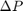

BFPClass methods
Methods will be explained in detail in this page.
parameters setting functions (consult BFPClass documentation for parameters details)
- getParameters(Rg,Rc,Rp,P): sets objects values for radii of RBC (Rg), RBC-bead contact (Rc), inner pipette radius (Rp) and aspiration pressure (P)
- getBeadParameters(radius,buffer,sensitivity,edge,metric,P2M): sets parameters for bead tracking; radius range (radius), maximal number of frames of failed tracking (buffer), circle sensitivity (sensitivity), edge sensitivity to determine edge pixels (edge), detection strength metric threshold (metric), and pixel-to-micron ratio (P2M)
- getPipetteParameters(correlation,contrast,buffer): sets parameters for pipette pattern matching; correlation coefficient threshold (correlation), contrast metric threshold (contrast), and maximal number of consecutive frames of failed tracking (buffer)
tracking control function
- Track(hplot): input is a handle to a target graph, where results of tracking are plotted immediately after the processing. The function creates a progress bar indicating percentage of frames finished; this progress bar also allows user to cancel the tracking using Cancel button. It cycles through the intervals contained in object's intervallist variable and for each, it calls TrackPipette method and TrackBead method, one after another. If tracking fails during an interval, the interval is excluded from the results, and momentary results are dumped into the base Matlab workspace. On the other hand, the method marks each finished interval as tracked by setting its tracked variable to true. After all intervals have been processed, the method calls generateReport function, to generate fidelity summary of tracking. In the end, it plots the results into the hplot axes.
plotting and reports
- plotTracks(hplot; fInd, lInd, pip, bead, Style, Calibration): only required input is the target axes handle, hplot, where the function outputs. Optional inputs are:
- fInd: first index of the plotted window; integer
- lInd: last index of the plotted window; integer
- pip: switch to plot or not data for the pipette, if applicable; boolean
- bead: switch to plot or not data for the bead, if applicable; boolean
The remaining options are parameters passed as ('name',value) pair
- Style: a string determining what should be plotted; one of the following '3D' (trajectories with time axis), '2D' (trajectories without time axis), 'F' (force), 'M' (tracking metric)---default is '3D'
- Calibration: information, whether the probe has been calibrated; boolean (default is false)
- [hrepfig] = generateReport(): takes no inputs and returns a handle to the report figure hrepfig. Report agregates the badFrames arrays returned for each interval by tracking methods. These are the frames, where tracking was considerably under-performing or downright failed. The method marks intervals of prolonged tracking uncertainty and reports explicitly intervals of lower confidence. The report comes with detailed explanatory text.
- generateTracks(VideoPath,Name,Profile,Framerate,Sampling): all the inputs are parameter. VideoPath is path to the folder where video file will be saved (default is the same as the source video), Name is the name of the exported video (default is old video name appended by 'Tracks.avi'), Profile is the type of the output (default is 'Motion JPEG AVI', consult Matlab VideoWriter for more options), Framerate is the framerate of the output in fps (default is 10), Sampling set the rate of sampling from the original video (default is 1, i.e. every frame is taken). The video is generated with overlaying tracking marks (red circles delineating the bead, blue ring delineating the anchor point on the pipette) and annotated by the frame index.
force calculation
- [overLimit]=getForce(hplot,calib): takes handle to the plot axes hplot and information whether the probe has been calibrated calib. These inputs are passed to plotting function plotTracks when the results are plotted by the function. The function returns overLimit, which is true if RBC extension at any processed frame exceeds linearLimit. This indicates, that conditions of linear force-strain ratio may not hold well at some intervals. The method cycles through all the intervals, excludes those, where tracking failed, and calculates force magnitude for each valid frame, based on the detected RBC deformation (extension or compression, ) and the stiffness k of the RBC, as . The unloaded size of the RBC is provided as part of intervallist. The RBC stiffness is calculated by function getStiffness.
- getStiffness(): calculates the stiffness of the bead based on the equation
where is the pipette radius,  is the aspiration pressure, is the contact radius. The radii with a hat sign are normalized by the RBC radius , i.e. .
data access
- [value]=getByFrame(frm,type): returns a requested quantity for a requested frame. Two required inputs, frm is index of the requested frame, type is the type out of the following list 'force' (magnitude of force), 'pipette' (coordinates of pipette anchor), 'bead' (coordinates of bead centre), 'metric' (pipette and bead detection strength metric).
- importData(type,data;range): imports outer formatted data into the object. The data must be in columns, first column numbering the frames. type is the type of data of the following list 'force' (forces), 'beadPositions' (coordinates of bead centre), 'pipPositions' (coordinates of pipette anchor). Parameter range restricts the interval of import.